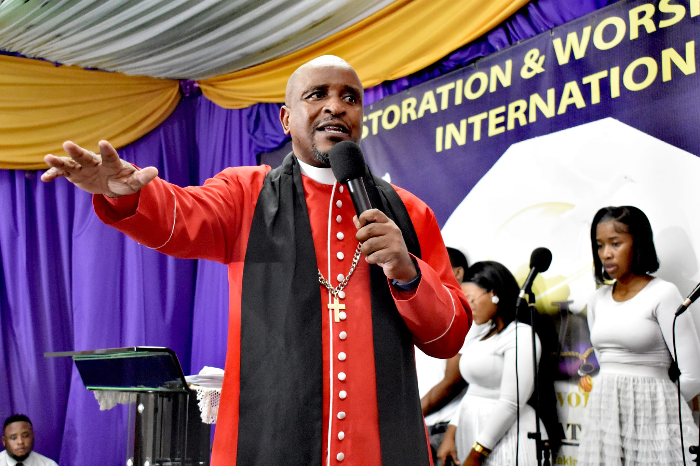
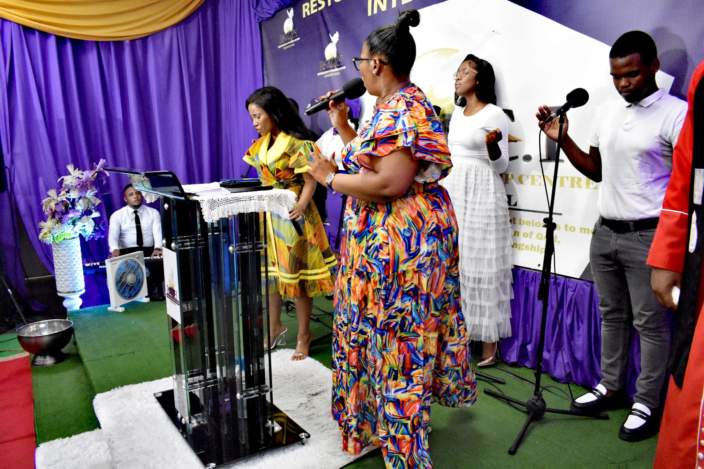

About Us
Bishop BM Buthelezi

Bishop BM Buthelezi is our esteemed spiritual leader and the visionary behind RAWCI. With unwavering faith and dedication, he has been guiding our congregation since our establishment in 2009. Bishop BM Buthelezi's leadership and teachings have been instrumental in shaping RAWCI's commitment to restoration and serving the God of restoration.
Location
RAWCI's inaugural branch can be found at 423 Excell House, Smith Street in Durban. However, we are thrilled to announce that we've expanded our presence and now have multiple branches across KwaZulu-Natal. Since our establishment in 2009, RAWCI has been dedicated to the concept of restoration and serving the God of restoration. We have a vision for a world where everything that was once lost is brought back, and we are resolute in reclaiming what rightfully belongs to us. As a close-knit community, we wholeheartedly embrace the ideals of renewal and reconstruction, boldly declaring ourselves as kings destined to rule and steadfast in our commitment to fulfilling our life's purpose without being hindered by untimely setbacks.
Our Mission
At RAWCI, we thank the Lord for the restoration of joy, peace, our families, healing, finances, and businesses. Our mission is to complete the restoration of humanity back to Kingship. Together, we declare, 'Ziyabuya, Sezibuyile' – we work and pray.